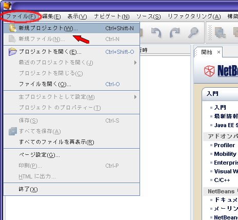
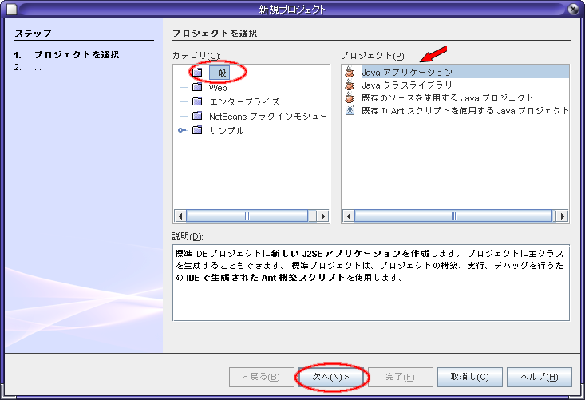
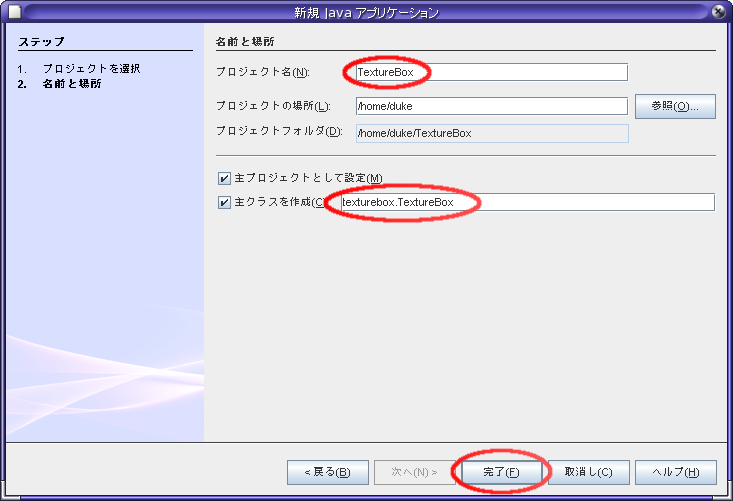
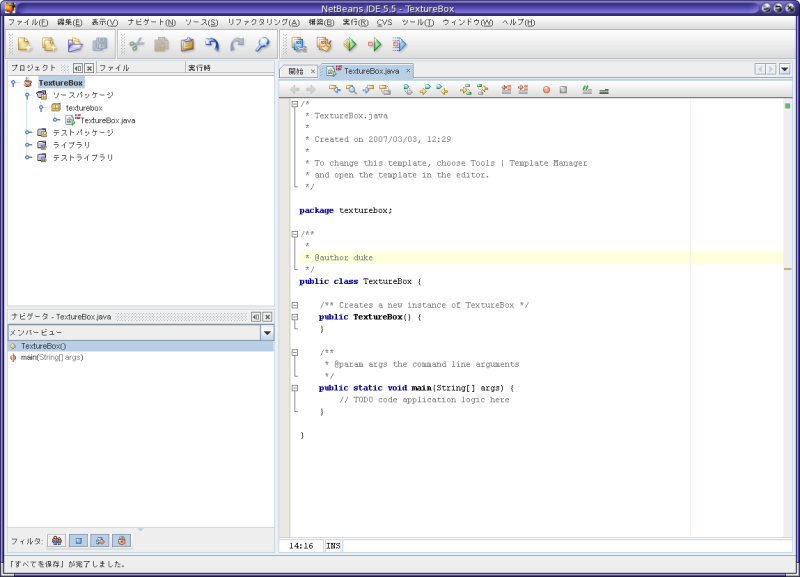
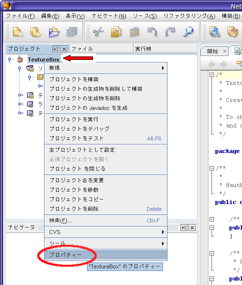
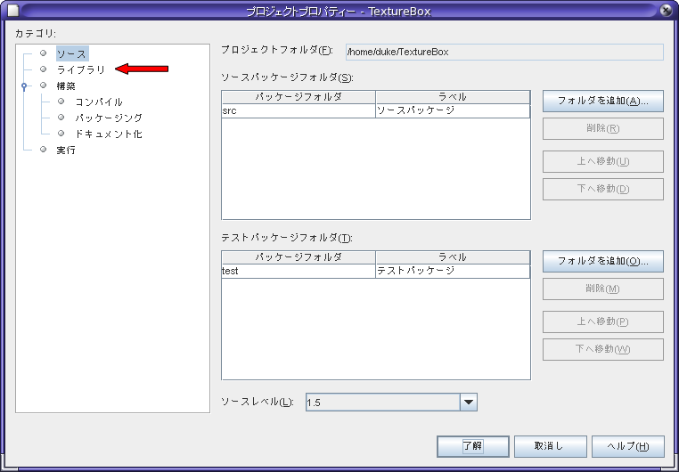
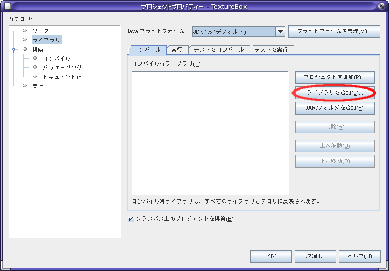
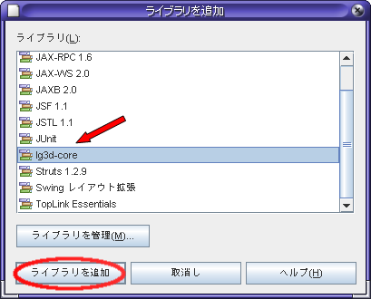
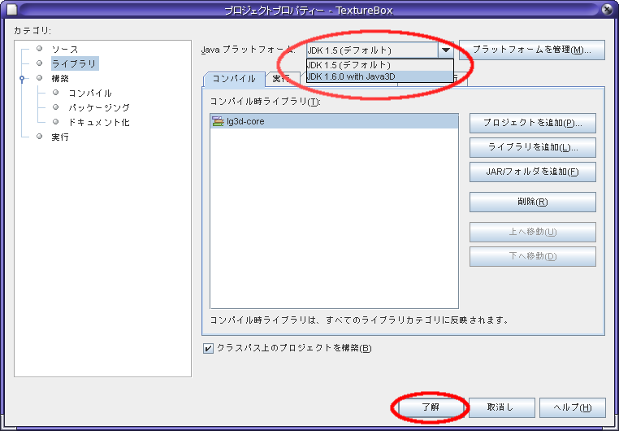

JavaOne Tokyo Hands on Lab :
Project Looking Glass (LG3D) Basic Programming
4.1 プロジェクトの作成
この章で行うこと :
NetBeans を用いて LG3D アプリケーションを作成するために
以下のことを行います。
- LG3D アプリケーションを作成するためのプロジェクトの作成
- プログラミング環境のセットアップ
プロジェクトの作成
- NetBeans 5.5のメニューから、
「ファイル」→「新規プロジェクト」を選択します。

- プロジェクト作成用のダイアログが表示されますので、
- カテゴリ : 一般
- プロジェクト : Javaアプリケーション
を選択します。
確認後、「次へ」ボタンを押します。

- プロジェクトの情報を入力を求められますので、
- プロジェクト名 : TextureBox
- 主クラスを作成 : texturebox.TextureBox
に変更します。
パッケージ名はデフォルトの texturebox をそのまま利用します。
入力が終わったら、「完了」を押します。

- クラスなどを含むプロジェクトが作成され、下図のようになります。

プログラミング環境、実行環境の設定
- IDE の左上部にプロジェクトの情報が表示されていることを確認し
「TextureBox」を選択します。
選択後、右クリックを押すことでメニューが表示されますので
「プロパティ」を選択します。

- プロジェクトプロパティの設定用ウィンドウが表示されますので、
を選択します。

- ウィンドウの右側の「コンパイル」が選択されていることを確認し、
「ライブラリの追加」をクリックします。

- 「ライブラリの追加」という新しいウィンドウが表示されますので、
「lg3d-core」というライブラリを選択し、
「ライブラリの追加」をクリックします。

- プロジェクトプロパティの設定用ウィンドウの
「コンパイル時ライブラリ」のリストに「lg3d-core」が追加されていることを確認します。
確認後、上部の 「Javaプラットフォーム」の項目を
- Javaプラットフォーム : JDK 1.6.0 with Java3D
に変更します。
そして、下側にある「了解」をクリックします。
これで設定は終了です。
